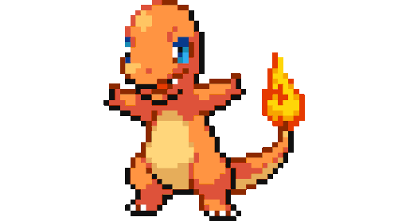

-
BULBASAUR #001

- Grama
- Veneno
Há uma semente de planta em suas costas desde o dia que este Pokémon nasce. A semente cresce lentamente.
-
IVYSAUR #002

- Grama
- Veneno
A luz solar fará a flor em suas costas crescer. Conforme Ivysaur for crescendo, essa for irá desbrochar. Ela irá soltar um doce aroma quando florescer.
-
VENUSAUR #003

- Grama
- Veneno
Há uma grande flor nas costas do Venusaur. Diz-se que a flor adquire cores vivas, caso receba muita nutrição e luz solar. O aroma da flor acalma as emoções das pessoas.
-
CHARMANDER #004
- Fogo
A chama que queima na ponta da cauda é uma indicação de suas emoções. A chama tremula quando Charmander está se divertindo. Se o Pokémon se enfurecer, a chama queima ferozmente.
-
CHARMELEON #005

- Fogo
Charmeleon impiedosamente destrói seus inimigos usando suas garrar afiadas, se encontrar um inimigo forte, ele se torna agressivo. Nesse estado excitado, a chama na ponta de sua cauda brilha com uma cor branca azulada.
-
CHARIZARD #006

- Fogo
- Voador
Charizard voa pelos céus em busca de oponentes poderosos. Ele respira um calor tão grande que derrete qualquer coisa. No entanto, nunca dá um sopro ardente a qualquer oponente mais fraco que ele.
-
SQUIRTLE #007

- Água
A concha de Squirtle não é apenas usada para proteção. A forma arredondada da concha e as ranhuras na superfície ajudam a minimizar a resistência na água, permitindo que este Pokémon nade em alta velocidade.
-
WARTORTLE #008

- Água
Sua cauda é grande e coberta por um pelo rico e grosso. A cauda torna-se cada vez mais profunda na cor à medida que Wartortle envelhece. Os arranhões em sua concha são uma evidência da dureza deste Pokémon como um lutador.
-
BLASTOISE #009

- Água
Blastoise tem bicos de água que se projetam de sua concha. Os bicos de água são muito precisos. Eles podem disparar balas de água com precisão suficiente para atingir latas vazias a uma distância de mais de 60 metros.
-
CATERPIE #010

- Inseto
Caterpie tem um apetite voraz. Ele pode devorar folhas maiores que seu corpo diante dos seus olhos. De sua antena, este Pokémon libera um odor terrívelmente forte.
-
METAPOD #011

- Inseto
A concha que cobre o corpo deste Pokémon é tão dura quanto uma laje de ferro. Metapod não se move muito, ele fica parado porque está preparando suas entranhas suaves para a evolução dentro da casca dura.
-
BUTTERFREE #012

- Inseto
- Voador
Butterfree tem uma capacidade superior para procurar mel delicioso de flores. Pode até procurar, extrair e transportar mel de flores que estão desabrochando a mais de 10 quilômetros do ninho.